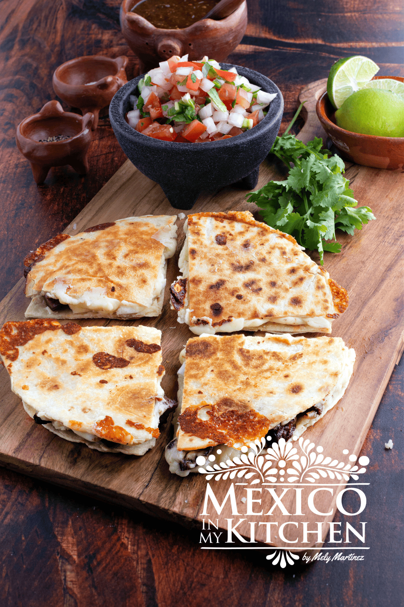

Quesadillas mexicanas

Description
This Steak quesadilla Recipe is mouthwatering and filling meal that can be enjoyed any day of the week. The combination of tender steak, melted cheese, and warm tortillas is irresistible. Whether you're cooking for yourself or a group of friends, steak quesadillas are a surefire crowd-pleaser. Plus, they're incredibly quick and easy to make.
Ingredients
- 1 Tb. vegetable oil
- ½ cup white onion finely chopped
- 1 lb. fajita sirloin or rib eye steak, finely diced.
- Salt and pepper to season steak
- 8 medium size flour tortillas
- 8 oz Oaxaca Cheese
- 1 whole avocado cut into slices or guacamole optional
- ½ cup pico de gallo salsa
- lime slices
- Mexican Cream
Steps
- Heat a skillet over medium-high heat, and add the vegetable oil. When the oil is hot, add the chopped onion and sauté for about 2 minutes.
- Season the meat with salt and pepper. Add the chopped meat to the skillet and cook until browned about 6-8 minutes.
- Now, make the quesadillas by placing one tortilla on a preheated grilled or comal. Top the tortilla with ¼ of the cooked meat and then with ¼ of the Oaxaca Cheese that has been separated into strings. (If you are using shredded cheese, just add about ¼ of the 8oz cheese package)
- Top with another tortilla on top and press it gently to seal the tortillas. (I don’t grease the griddle, but if you want to, you can add a teaspoon of oil for each quesadilla)
- Cook the quesadilla on medium heat. Cook the quesadilla for 2 or 3 minutes and turn to cook the other side. When ready, the tortilla will be crispy with brown spots, and the cheese will have melted. Repeat this process with the rest of the quesadillas.